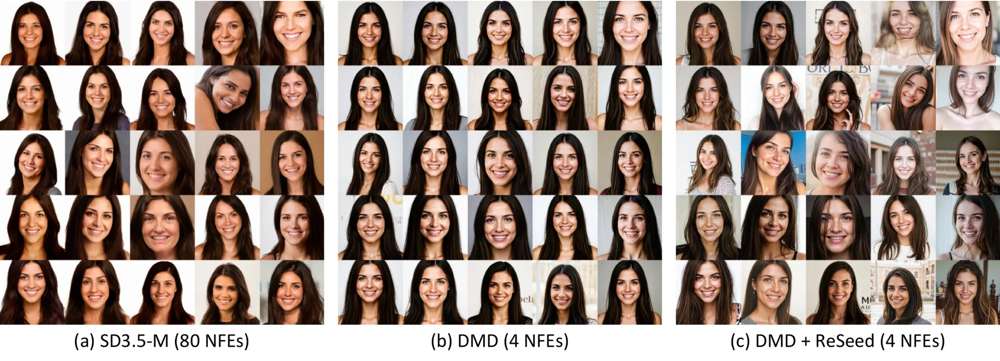

Compute the teacher target
Run the teacher over the student's first interval using the same prompt and initial noise.
TL;DR ReSeed restores diversity in distilled image and video diffusion models by training a bias adaptor for the first denoising step. The original student stays frozen, with 0.002–0.004% additional trainable parameters and no extra sampling steps.
Graz University of Technology · Swiss Data Science Center · Complexity Science Hub
The arXiv link will be added when available.

ReSeed adds trainable biases to a frozen student. They are trained on the first denoising interval and switched off for later steps.
Run the teacher over the student's first interval using the same prompt and initial noise.
Match the student velocity to the teacher target by training the added biases. Keep the original student weights frozen.
Use the adapted student for step one and the original student for steps two through four.
The frozen teacher computes the target velocity from the same prompt and initial noise.
View method figure ↗We evaluate three image models and one video model. The added biases account for 0.002–0.004% of denoiser parameters. The table reports diversity, FID, and the number of added parameters.
DINOv3 diversity with 233,472 trainable bias parameters. FID decreases from 40.22 to 34.65.
DINO diversity and FID improve on the image models, while PickScore or HPS can decrease. For video, text alignment and dynamic degree decrease.
| Generator | DINO diversity ↑ | Relative gain | FID ↓ | Added parameters |
|---|---|---|---|---|
| SD3-Medium | 0.2142 → 0.2936 | +37.1% | 37.38 → 33.48 | 0.00356% |
| SD3.5-Medium | 0.2356 → 0.3282 | +39.3% | 32.51 → 29.30 | 0.00322% |
| FLUX.1-dev | 0.1575 → 0.2336 | +48.3% | 40.22 → 34.65 | 0.00196% |
| Wan2.1-T2V-1.3B | 0.3374 → 0.4290 | +27.1% | Not evaluated | 0.00325% |
Image results use the paper's COCO and same-prompt diversity protocols. Video results use 320 VBench prompts and one adapter training run.
Each column uses the same prompt and initial noise across methods. For SD3-Medium and SD3.5-Medium, we show nine of twelve seeds chosen by visual review of ReSeed image quality and variety. FLUX examples use all nine available seeds. All images are uncropped; the table above uses the full evaluation set.
Choose one of 20 prompts using the thumbnails below. Each comparison shows eight matched noise samples for DMD2, DFD, and DMD2 + ReSeed. Videos contain 81 frames at 16 fps.
Five samples are shown at a time. Use “More samples” to view the rest.On the full 320-prompt VBench set, video-level DINO diversity is 0.3374 (DMD2), 0.3358 (DFD), and 0.4290 (DMD2 + ReSeed). DFD uses the released checkpoint from Data-Forcing Distillation; ReSeed was trained for 300 updates.
Distilled diffusion models can produce similar outputs from different initial noises. ReSeed trains added bias parameters to match the teacher's first-interval velocity and applies them only during the first student step.
Experiments on SD3-Medium, SD3.5-Medium, FLUX.1-dev, and Wan2.1 show higher same-prompt feature diversity. The method keeps the original student weights frozen and uses the same number of sampling steps.
An arXiv reference will be added when the preprint is posted.
@misc{tang2026reseed,
title = {A First-Step Bias Restores Lost Diversity in Diffusion Model Distillation},
author = {Tang, Wenwu and Wang, Dong and Cheng, Yun and Saukh, Olga},
year = {2026},
note = {Manuscript}
}